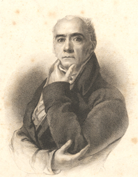

|
|
||||
|
|
Home | Corson Collection | Biography | Works | Image Collection | Recent Publications | Correspondence | Forthcoming Events | Links | E-texts | Contact Sir Henry Raeburn (1756-1823)The most prominent portrait painter of his day, Raeburn was born in the Stockbridge area of Edinburgh on 4 March 1756. He lost his father, a mill owner, at an early age, was raised by an older brother, and educated at Heriot's Hospital. In 1772 he was apprenticed to the jeweller James Gilliland but began painting water-colour miniatures of his friends. He soon attracted the attention of the city's leading portraitist, David Martin. With guidance from Martin, Raeburn turned to painting in oil and began to develop his personal style. In 1778, he married a wealthy widow of independent means, whose dowry permitted him to devote himself entirely to painting. Through the marriage, he also acquired the Deanhaugh Estate in Stockbridge. He was later to purchase the neighbouring St. Bernard's estate and to amass a considerable fortune by feuing both for building the Stockbridge extension of Edinburgh's New Town. In 1784 he travelled to London where he met Sir Joshua Reynolds whose style was to exert a great influence upon him. On Reynolds's advice, he spent the following two years studying in Italy. Raeburn returned to Edinburgh in 1787, set up a studio in George Street, and rapidly established himself as the leading portraitist of Edinburgh society. He was to paint many of the most prominent Scots of the days, gradually developing from bust-sized figures to full length portraits. His reputation spread beyond Edinburgh and he became a member of the Royal Academy in 1815. He was knighted by King George IV during his visit to Scotland in 1822 and, shortly before his death in 1823, was appointed His Majesty's Limner for Scotland. Alongside Sir David Wilkie, Raeburn is considered the founder of the 'Scottish School' of painting.
LinksFor further information on Raeburn and images of his work, please consult the following sites: Bibliography
Last updated: 19-Apr-2005 |
|||